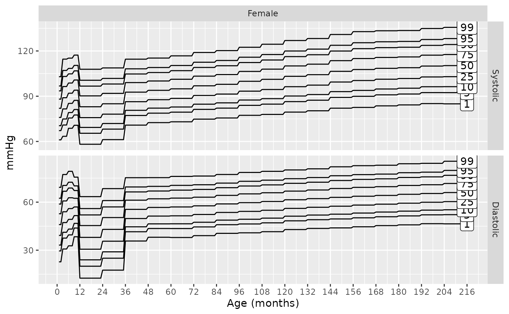
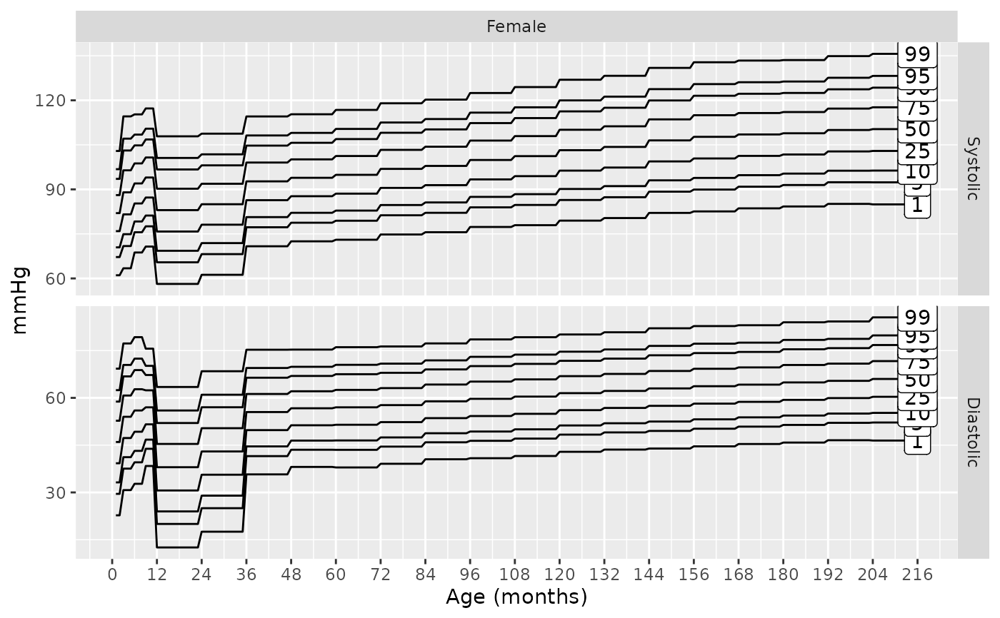
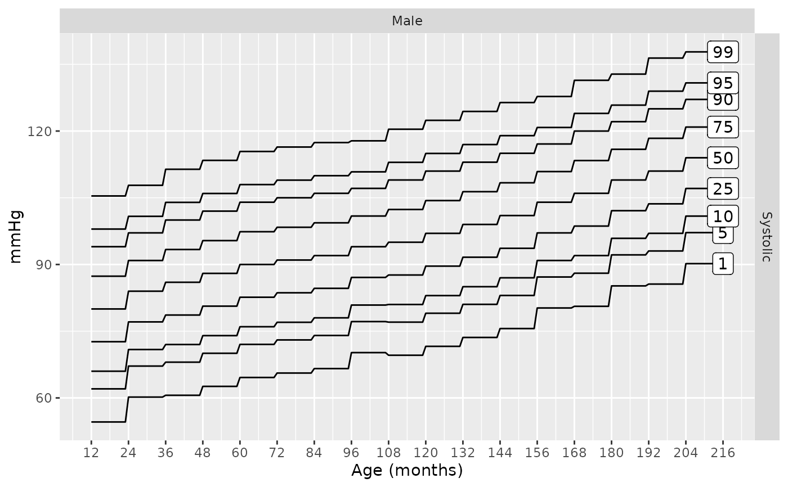
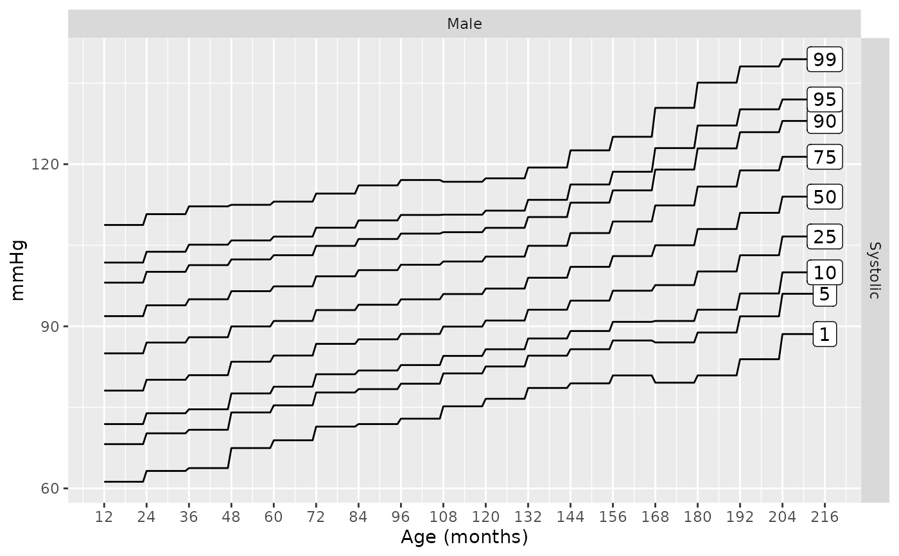
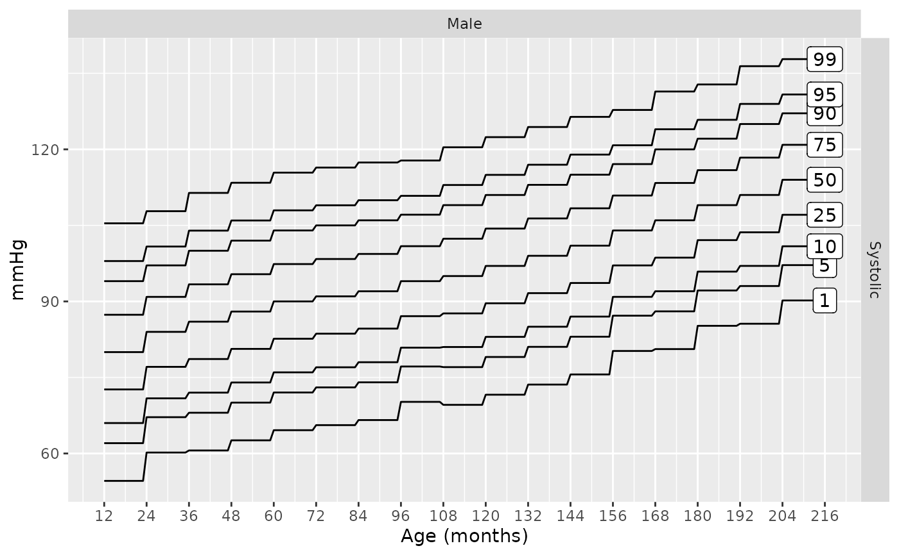
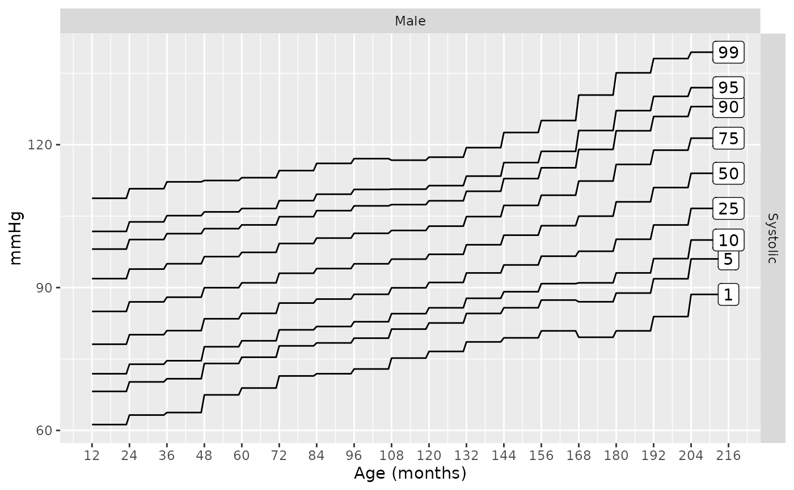

Build blood pressure charts showing select percentile curves over age by sex, height, and source.
Arguments
- bp
character vector controlling if the systolic and/or the diastolic pressures are plotted
- male
integer value, 1 = male, 0 = female
- height
numeric, in centimeters, can be missing. See Details.
- height_percentile
height percentile to use; range from [0, 100]. See Details.
- default_height_percentile
default height percentile to use if
heightis missing; range (0, 100).- p
a numeric vector of the percentiles, provided in values between 0 and 1, to plot
- source
the method, or data set, to use as the reference. See Details.
Examples
bp_chart(male = 0:1)
 bp_chart(male = 1)
bp_chart(male = 0)

bp_chart(male = 0, source = "gemelli1990")
bp_chart("sbp", male = 0, source = "gemelli1990")
bp_chart("dbp", male = 1, source = "gemelli1990")
bp_chart(male = 1)
bp_chart(male = 0)

bp_chart(male = 0, source = "gemelli1990")
bp_chart("sbp", male = 0, source = "gemelli1990")
bp_chart("dbp", male = 1, source = "gemelli1990")
 bp_chart("sbp", male = 1, source = "nhlbi")

bp_chart("sbp", male = 1, source = "flynn2017")

# if you want to modify the plot, it might be helpful to see the data it is
# based on
g <- bp_chart(male = 1)
head(g$data)
#> age male height height_percentile p mmHg source plab bp
#> 1 1 1 NA NA 0.01 60.73652 gemelli1990 1 Systolic
#> 2 2 1 NA NA 0.01 60.73652 gemelli1990 1 Systolic
#> 3 3 1 NA NA 0.01 66.41017 gemelli1990 1 Systolic
#> 4 4 1 NA NA 0.01 66.41017 gemelli1990 1 Systolic
#> 5 5 1 NA NA 0.01 66.41017 gemelli1990 1 Systolic
#> 6 6 1 NA NA 0.01 75.06287 gemelli1990 1 Systolic
# here we color the background to show the source reference values
bkgrnd <- aggregate(x = age ~ male + bp + source, data = g$data, FUN = range)
g +
ggplot2::theme_bw() +
ggplot2::geom_rect(
data = bkgrnd,
mapping = ggplot2::aes(xmin = age[, 1],
xmax = age[, 2] + 1,
ymin = -Inf,
ymax = Inf,
fill = source)
) +
ggplot2::scale_fill_manual(
name = "Data\nSource",
values = c("gemelli1990" = ggplot2::alpha("#236192", 0.5)
, "nhlbi" = ggplot2::alpha("#6F263D", 0.5)
, "lo2013" = ggplot2::alpha("#A2AAAD", 0.5)
))
bp_chart("sbp", male = 1, source = "nhlbi")

bp_chart("sbp", male = 1, source = "flynn2017")

# if you want to modify the plot, it might be helpful to see the data it is
# based on
g <- bp_chart(male = 1)
head(g$data)
#> age male height height_percentile p mmHg source plab bp
#> 1 1 1 NA NA 0.01 60.73652 gemelli1990 1 Systolic
#> 2 2 1 NA NA 0.01 60.73652 gemelli1990 1 Systolic
#> 3 3 1 NA NA 0.01 66.41017 gemelli1990 1 Systolic
#> 4 4 1 NA NA 0.01 66.41017 gemelli1990 1 Systolic
#> 5 5 1 NA NA 0.01 66.41017 gemelli1990 1 Systolic
#> 6 6 1 NA NA 0.01 75.06287 gemelli1990 1 Systolic
# here we color the background to show the source reference values
bkgrnd <- aggregate(x = age ~ male + bp + source, data = g$data, FUN = range)
g +
ggplot2::theme_bw() +
ggplot2::geom_rect(
data = bkgrnd,
mapping = ggplot2::aes(xmin = age[, 1],
xmax = age[, 2] + 1,
ymin = -Inf,
ymax = Inf,
fill = source)
) +
ggplot2::scale_fill_manual(
name = "Data\nSource",
values = c("gemelli1990" = ggplot2::alpha("#236192", 0.5)
, "nhlbi" = ggplot2::alpha("#6F263D", 0.5)
, "lo2013" = ggplot2::alpha("#A2AAAD", 0.5)
))